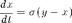
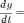
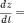

Lorenz Attractor
The Lorenz system is a well known example of deterministic chaos in a simple set of 3 ordinary differential equations. This example illustrates the use of 3D visualization in understanding the phase plane dynamics of a simple nonlinear system.



Contents
Dependencies
This example uses the Chebfun package.
Parameters
sig=10; beta=8/3; rho=28;
Model Equations
deriv = @(t,x) [ ... -sig*x(1) + sig*x(2); ... rho*x(1) - x(2) - x(1)*x(3); ... -beta*x(3) + x(1)*x(2)];
Simulation
y = ode45(deriv,domain(0,80),[3 0 5]); figure(1);clf; subplot(3,1,1); plot(y(:,1)); ylabel('y_1'); title('Lorenz Oscillator'); subplot(3,1,2); plot(y(:,2)); ylabel('y_2'); subplot(3,1,3); plot(y(:,3)); ylabel('y_3'); xlabel('Time');

Lorenz Attractor
figure(2);clf; plot3(y(:,1),y(:,2),y(:,3)); grid title('Lorenz Oscillator'); xlabel('y_1');ylabel('y_2');zlabel('y_3');